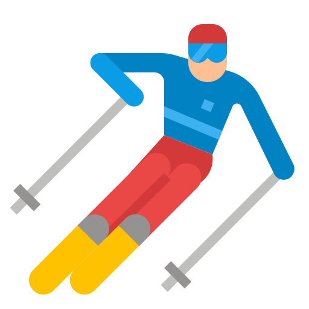
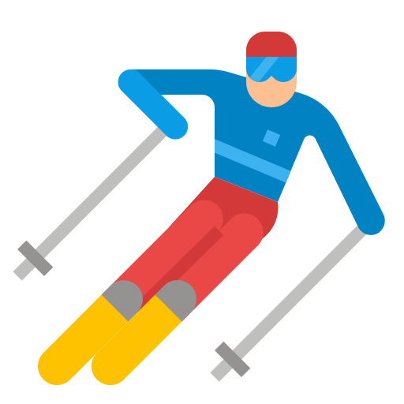

Alexandre Condette
Ingénieur en aérospatial
Actuellement ingénieur d'études et développement logiciel chez Thales Services Numériques depuis février 2025, je contribue aux projets de ballons pour le CNES, avec une spécialisation dans la partie contrôle-commande.
En parallèle de mon activité professionnelle, je suis secrétaire de l'association Célescope. Cette association a pour objectif de développer un télescope automatisé aux antipodes de la France, permettant ainsi une observation continue, de jour comme de nuit, grâce à deux télescopes situés respectivement en France et aux antipodes.
Diplômé ingénieur de l'IPSA (promotion 2020) avec une spécialisation en "Systèmes embarqués" et une majeure en "Espace, Lanceurs et Satellites", j'ai également été major de la promotion ELSS.
Mon parcours m'a permis d'acquérir de solides compétences en développement logiciel, en particulier avec les langages C, C++, Python et TCL. J'ai également enrichi mes connaissances en astrophysique, mécanique spatiale, ainsi qu’en détection d'exoplanètes par photométrie. Mes compétences en optique géométrique et ondulatoire appliquées au spatial, en électronique (analogique et numérique), ainsi qu’en systèmes embarqués et bases de données SQL, complètent mon expertise technique.
Mes compétences


Je parle
 - Langue Maternelle
- Langue Maternelle
 - Bilingue C1/C2
- Bilingue C1/C2
 - Avancé B2/C1
- Avancé B2/C1
Mes loisirs

 

Autres Informations
Permis
Permis B : Depuis 2018
Permis Bateau Mer Côtier : Depuis 2013
Permis Bateau Option Eaux Intérieures : Depuis 2025